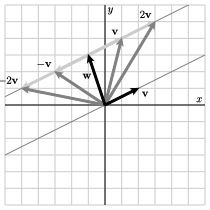

It is a remarkable fact that algebra, which is about symbolic equations and their solutions, and geometry are intimately connected. For instance, the solution set of a linear equation in two unknowns, such as \(2x + y = 1\text{,}\) can be represented graphically by a straight line. The aim of this section is to further this connection by introducing vectors, which will help us to apply geometric intuition to our thinking about linear systems.
A vector is most simply thought of as a matrix with a single column. For instance, \(\vvec = \left[
\begin{array}{r}
2 \\
1 \\
\end{array}
\right]\) and \(\wvec = \left[
\begin{array}{r}
-3 \\
1 \\
0 \\
2 \\
\end{array}
\right]\) are both vectors. The entries in a vector are called its components. Since the vector \(\vvec\) has two components, we say that it is a two-dimensional vector; in the same way, the vector \(\wvec\) is a four-dimensional vector.
We denote the set of all \(m\)-dimensional vectors by \(\real^m\text{.}\) Consequently, if \(\uvec\) is a 3-dimensional vector, we say that \(\uvec\) is in \(\real^3\text{.}\)
While it can be difficult to visualize a four-dimensional vector, we can draw a simple picture describing the two-dimensional vector \(\vvec\text{,}\) as shown in Figure 2.1.1.
Figure2.1.1.A graphical representation of the vector \(\vvec = \twovec21\text{.}\)
We can think of \(\vvec\) as describing a walk in the plane where we move two units horizontally and one unit vertically. Though we allow ourselves to begin walking from any point in the plane, we will most frequently begin at the origin in which case we arrive at the the point \((2,1)\text{,}\) as shown in the figure.
Consider vectors that have the form \(\vvec +
c\wvec\) where \(c\) is any scalar. Sketch a few of these vectors when, say, \(c = -2, -1, 0, 1, \) and \(2\text{.}\) Give a geometric description of this set of vectors.
If \(c\) and \(d\) are two scalars, then the vector
\begin{equation*}
c \vvec + d \wvec
\end{equation*}
is called a linear combination of the vectors \(\vvec\) and \(\wvec\text{.}\) Find the vector that is the linear combination when \(c = -2\) and \(d = 1\text{.}\)
Can the vector \(\left[\begin{array}{r} -31 \\ 37
\end{array}\right]\) be represented as a linear combination of \(\vvec\) and \(\wvec\text{?}\) Asked differently, can we find scalars \(c\) and \(d\) such that \(c\vvec+d\wvec = \twovec{-31}{37}\text{.}\)
First, we see that scalar multiplication has the effect of stretching or compressing a vector. Multiplying by a negative scalar changes the direction of the vector. In either case, Figure 2.1.5 shows that a scalar multiple of a vector \(\vvec\) lies on the same line defined by \(\vvec\text{.}\)
Figure2.1.5.Scalar multiples of the vector \(\vvec=\twovec21\text{.}\)
To represent the sum \(\vvec + \wvec\text{,}\) we imagine walking from the origin with the appropriate horizontal and vertical changes given by \(\vvec\text{.}\) From there, we continue our walk using the horizontal and vertical changes prescribed by \(\wvec\text{,}\) after which we arrive at the sum \(\vvec
+ \wvec\text{.}\) This is illustrated on the left of Figure 2.1.6 where the tail of \(\wvec\) is placed on the tip of \(\vvec\text{.}\)
Figure2.1.6.Vector addition as a simple walk in the plane is illustrated on the left. The vector sum is represented as the diagonal of a parallelogram on the right.
Alternatively, we may construct the parallelogram with \(\vvec\) and \(\wvec\) as two sides. The sum is then the diagonal of the parallelogram, as illustrated on the right of Figure 2.1.6.
We have now seen that the set of vectors having the form \(c\vvec\) is a line. To form the set of vectors \(c\vvec+\wvec\text{,}\) we can begin with the vector \(\wvec\) and add multiples of \(\vvec\text{.}\) Geometrically, this means that we begin from the tip of \(\wvec\) and move in a direction parallel to \(\vvec\text{.}\) The effect is to translate the line \(c\vvec\) by the vector \(\wvec\text{,}\) as shown in Figure 2.1.7.

Figure2.1.7.The set of vectors \(c\vvec + \wvec\) form a line.
At times, it will be useful for us to think of vectors and points interchangeably. That is, we may wish to think of the vector \(\left[\begin{array}{r} 2 \\ 1 \end{array}\right]\) as describing the point \((2,1)\) and vice-versa. When we say that the vectors having the form \(c\vvec + \wvec\) form a line, we really mean that the tips of the vectors all lie on the line passing through \(\wvec\) and parallel to \(\vvec\text{.}\)
Sage can perform scalar multiplication and vector addition. We define a vector using the vector command; then * and + denote scalar multiplication and vector addition.
Linear combinations, which we encountered in the preview activity, provide the link between vectors and linear systems. In particular, they will help us apply geometric intuition to problems involving linear systems.
In this activity, we will look at linear combinations of a pair of vectors, \(\vvec = \left[\begin{array}{r} 2 \\ 1 \end{array}\right]\) and \(\wvec = \left[\begin{array}{r} 1 \\ 2 \end{array}\right]
\text{.}\)
The diagram below can be used to construct linear combinations whose weights \(c\) and \(d\) may be varied using the sliders at the top. The vectors \(\vvec\) and \(\wvec\) are outlined while the linear combination
The weight \(d\) is initially set to 0. Explain what happens as you vary \(c\) while keeping \(d=0\text{.}\) How is this related to scalar multiplication?
What is the linear combination of \(\vvec\) and \(\wvec\) when \(c = 1\) and \(d=-2\text{?}\) You may find this result using the diagram, but you should also verify it by computing the linear combination.
Describe the vectors that arise when the weight \(d\) is set to 1 and \(c\) is varied. How is this related to our investigations in the preview activity?
Can the vector \(\left[\begin{array}{r} 0 \\ 0 \end{array} \right]\) be expressed as a linear combination of \(\vvec\) and \(\wvec\text{?}\) If so, what are the weights \(c\) and \(d\text{?}\)
Can the vector \(\left[\begin{array}{r} 3 \\ 0 \end{array} \right]\) be expressed as a linear combination of \(\vvec\) and \(\wvec\text{?}\) If so, what are the weights \(c\) and \(d\text{?}\)
Verify the result from the previous part by algebraically finding the weights \(c\) and \(d\) that form the linear combination \(\left[\begin{array}{r} 3 \\ 0 \end{array} \right]\text{.}\)
Can the vector \(\left[\begin{array}{r} 1.3 \\ -1.7 \end{array} \right]\) be expressed as a linear combination of \(\vvec\) and \(\wvec\text{?}\) What about the vector \(\left[\begin{array}{r} 15.2 \\ 7.1 \end{array} \right]\text{?}\)
This activity illustrates how linear combinations are constructed geometrically: the linear combination \(c\vvec +
d\wvec\) is found by walking along \(\vvec\) a total of \(c\) times followed by walking along \(\wvec\) a total of \(d\) times. When one of the weights is held constant while the other varies, the vector moves along a line.
The previous activity also shows that questions about linear combinations lead naturally to linear systems. Suppose we have vectors \(\vvec = \twovec3{-1}\) and \(\wvec=\twovec43\text{.}\) Let’s determine whether we can describe the vector \(\bvec=\twovec{-11}{-18}\) as a linear combination of \(\vvec\) and \(\wvec\text{.}\) In other words, we would like to know whether there are weights \(c\) and \(d\) such that
In fact, we know more because the reduced row echelon matrix tells us that these are the only possible weights. Therefore, \(\bvec\) may be expressed as a linear combination of \(\vvec\) and \(\wvec\) in exactly one way.
This example demonstrates the connection between linear combinations and linear systems. Asking whether a vector \(\bvec\) is a linear combination of vectors \(\vvec_1,\vvec_2,\ldots,\vvec_n\) is equivalent to asking whether an associated linear system is consistent.
In fact, we may easily describe the associated linear system in terms of the vectors \(\vvec\text{,}\)\(\wvec\text{,}\) and \(\bvec\text{.}\) Notice that the augmented matrix we found in our example was \(\left[
\begin{array}{rr|r}
3 \amp 4 \amp -11 \\
-1 \amp 3 \amp -18
\end{array}
\right].\) The first two columns of this matrix are \(\vvec\) and \(\wvec\) and the rightmost column is \(\bvec\text{.}\) As shorthand, we will write this augmented matrix replacing the columns with their vector representation:
The vector \(\bvec\) is a linear combination of the vectors \(\vvec_1,\vvec_2,\ldots,\vvec_n\) if and only if the linear system corresponding to the augmented matrix
can \(\bvec\) be expressed as a linear combination of \(\vvec_1\text{,}\)\(\vvec_2\text{,}\) and \(\vvec_3\text{?}\) Rephrase this question by writing a linear system for the weights \(c_1\text{,}\)\(c_2\text{,}\) and \(c_3\) and use the Sage cell below to answer this question.
Identify vectors \(\vvec_1\text{,}\)\(\vvec_2\text{,}\)\(\vvec_3\text{,}\) and \(\bvec\) such that the question "Is this linear system consistent?" is equivalent to the question "Can \(\bvec\) be expressed as a linear combination of \(\vvec_1\text{,}\)\(\vvec_2\text{,}\) and \(\vvec_3\text{?}\)"
Can \(\bvec\) be expressed as a linear combination of \(\vvec_1\text{,}\)\(\vvec_2\text{,}\) and \(\vvec_3\text{?}\) If so, can \(\bvec\) be written as a linear combination of these vectors in more than one way?
Considering the vectors \(\vvec_1\text{,}\)\(\vvec_2\text{,}\) and \(\vvec_3\) from the previous part, can we write every three-dimensional vector \(\bvec\) as a linear combination of these vectors? Explain how the pivot positions of the matrix \(\left[\begin{array}{rrr} \vvec_1 \amp
\vvec_2 \amp \vvec_3 \end{array} \right]\) help answer this question.
Can \(\bvec\) be expressed as a linear combination of \(\vvec_1\text{,}\)\(\vvec_2\text{,}\) and \(\vvec_3\text{?}\) If so, can \(\bvec\) be written as a linear combination of these vectors in more than one way?
Considering the vectors \(\vvec_1\text{,}\)\(\vvec_2\text{,}\) and \(\vvec_3\) from the previous part, can we write every three-dimensional vector \(\bvec\) as a linear combination of these vectors? Explain how the pivot positions of the matrix \(\left[\begin{array}{rrr} \vvec_1 \amp
\vvec_2 \amp \vvec_3 \end{array} \right]\) help answer this question.
These vectors appear to lie on the same line, a fact that becomes apparent once we notice that \(\wvec =
-2\vvec\text{.}\) Intuitively, we think of the linear combination
\begin{equation*}
c\vvec + d\wvec
\end{equation*}
as the result of walking \(c\) times in the \(\vvec\) direction and \(d\) times in the \(\wvec\) direction. With these vectors, we are always walking along the same line so it would seem that any linear combination of these vectors should lie on the same line. In addition, a vector that is not on the line, say \(\bvec = \twovec30\text{,}\) should be not be expressible as a linear combination of \(\vvec\) and \(\wvec\text{.}\)
This shows that the associated linear system is inconsistent, which means that the vector \(\bvec=\twovec30\) cannot be written as a linear combination of \(\vvec\) and \(\wvec\text{.}\)
tells us to expect this. Since there is not a pivot position in the second row of the coefficient matrix \(\begin{bmatrix}\vvec
\amp \wvec \end{bmatrix}\text{,}\) it is possible for a pivot position to appear in the rightmost column of the augmented matrix
Sketch below the line \(y=3x - 2\text{.}\) Then identify two vectors \(\vvec\) and \(\wvec\) so that this line is described by \(\vvec + c\wvec\text{.}\) Are there other choices for the vectors \(\vvec\) and \(\wvec\text{?}\)
Can you write the vector \({\mathbf 0} =
\left[\begin{array}{r} 0 \\ 0 \end{array}\right]\) as a linear combination of \(\vvec_1\text{,}\)\(\vvec_2\text{,}\) and \(\vvec_3\text{?}\) If so, describe all the ways in which you can do so.
Can you write the vector \({\mathbf 0} =
\left[\begin{array}{r} 0 \\ 0 \end{array}\right]\) as a linear combination using just the first two vectors \(\vvec_1\)\(\vvec_2\text{?}\) If so, describe all the ways in which you can do so.
Nutritional information about a breakfast cereal is printed on the box. For instance, one serving of Frosted Flakes has 111 calories, 140 milligrams of sodium, and 1.2 grams of protein. We may represent this as a vector
Suppose you eat \(c\) servings of Frosted Flakes and \(d\) servings of Cocoa Puffs. Use the language of vectors and linear combinations to express the quantities of calories, sodium, and protein you have consumed.
Can you express the vector \(\bvec=\left[\begin{array}{r} 10 \\ 1 \\ -8
\end{array}\right]\) as a linear combination of \(\vvec_1\text{,}\)\(\vvec_2\text{,}\) and \(\vvec_3\text{?}\) If so, describe all the ways in which you can do so.
Can you express the vector \(\bvec=\left[\begin{array}{r} 3 \\ 7 \\ 1
\end{array}\right]\) as a linear combination of \(\vvec_1\text{,}\)\(\vvec_2\text{,}\) and \(\vvec_3\text{?}\) If so, describe all the ways in which you can do so.
For what value(s) of \(k\text{,}\) if any, can the vector \(\left[\begin{array}{r} k \\ -2 \\ 5 \end{array}\right]\) be written as a linear combination of \(\vvec_1\) and \(\vvec_2\text{?}\)
Suppose \(\vvec_1,\vvec_2,\ldots,\vvec_n\) is a collection of \(m\)-dimensional vectors and that the matrix \(\left[\begin{array}{rrrr}
\vvec_1 \amp \vvec_2 \amp \ldots \amp \vvec_n
\end{array}\right]\) has a pivot position in every row. If \(\bvec\) is any \(m\)-dimensional vector, then \(\bvec\) can be written as a linear combination of \(\vvec_1,\vvec_2,\ldots,\vvec_n\text{.}\)
Suppose \(\vvec_1,\vvec_2,\ldots,\vvec_n\) is a collection of \(m\)-dimensional vectors and that the matrix \(\left[\begin{array}{rrrr}
\vvec_1 \amp \vvec_2 \amp \ldots \amp \vvec_n
\end{array}\right]\) has a pivot position in every row and every column. If \(\bvec\) is any \(m\)-dimensional vector, then \(\bvec\) can be written as a linear combination of \(\vvec_1,\vvec_2,\ldots,\vvec_n\) in exactly one way.
It is possible to find two 3-dimensional vectors \(\vvec_1\) and \(\vvec_2\) such that every 3-dimensional vector can be written as a linear combination of \(\vvec_1\) and \(\vvec_2\text{.}\)
A theme that will later unfold concerns the use of coordinate systems. We can identify the point \((x,y)\) with the tip of the vector \(\left[\begin{array}{r}x\\y\end{array}\right]\text{,}\) drawn emanating from the origin. We can then think of the usual Cartesian coordinate system in terms of linear combinations of the vectors
Figure2.1.15.The usual Cartesian coordinate system, defined by the vectors \(\evec_1\) and \(\evec_2\text{,}\) is shown on the left along with the representation of the point \((2,-3)\text{.}\) The right shows a nonstandard coordinate system defined by vectors \(\vvec_1\) and \(\vvec_2\text{.}\)
What is the general strategy for converting a point from standard Cartesian coordinates \((x,y)\) to the new coordinates \(\{c,d\}\text{?}\) Actually implementing this strategy in general may take a bit of work so just describe the strategy. We will study this in more detail later.